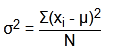
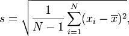
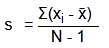
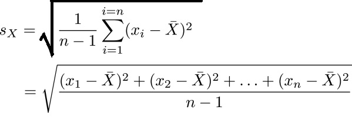

Standard Deviation Calculation
Standard Deviation, σ:
Count, N:
Sum, Σx:
Mean, μ:
Variance, σ 2:
Steps:


=( - )2 + ... + ( - )2 /
=/
=
σ = √
=
Margin of Error (Confidence interval)
The sampling mean most likely follows a normal distribution. In this case, the standard error of the mean (SEM) can be calculated using the following equation:
σ x̄ =
Based on the SEM, the following are the margins of error (or confidence intervals) at different confidence levels. Depending on the field of study, a confidence level of 95% (or statistical significance of 5%) is typically used for data representation.
Standard Deviation, s:
Count, N:
Sum, Σx:
Mean, x̄:
Variance, s 2:
Steps:

=( - )2 + ... + ( - )2 /
=/
=
σ = √
=
Margin of Error (Confidence interval)
The sampling mean most likely follows a normal distribution. In this case, the standard error of the mean (SEM) can be calculated using the following equation:
s x̄ =
Based on the SEM, the following are the margins of error (or confidence intervals) at different confidence levels. Depending on the field of study, a confidence level of 95% (or statistical significance of 5%) is typically used for data representation.
Please Insert Minimum 2 Value.
It is a Sample Population
Standard Deviation Calculator-Step by step [Tutorials]
What is Standard Deviation Calculator ?
Standard Deviation Calculator For a given data set standard deviation is defined as the measurement of the spread of data or sometimes it is describe as the distribution of the data of a data set.
It is used for defining the diversity of data in probability and statistics. It is calculated on the basis of average mean or mode that how much the value of a given data set is dispersed.
If the calculated standard deviation is less that means the dispersion of the data is low means it is very close to the mean or mode value and if the value of standard deviation is more, that means the value of the data set is much more dispersed.
In the statistics calculation of standard deviation is very much important and also very much in demand.
Standard Deviation is the part of statistics that is defined in the data set of value that is the diversity of the value.
How to calculate Standard Deviation ?
Standard Deviation Calculator: calculating step by step:
- The standard deviation formula may look confusing, but it will make sense after we break it down.
- Step 1: Find the mean.
- Step 2: For each data point, find the square of its distance to the mean.
- Step 2: For each data point, find the square of its distance to the mean.
- Step 3: Sum the values from Step 2.
- Step 4: Divide by the number of data points.
- Step 5: Take the square root.
Frequently Asked Questions (FAQ)
How to find standard deviation?
S=vS(x-x¯)2/N
where S = the standard deviation of a sample,
E means "sum of" X = each value in the data set,
X = mean of all values in the data set,
N = number of values in the data set.
How to find or Calculate Variance ?

What is standard deviation?
Sx= is the sample standard deviation
x̅= is the sample
n= it is the number of members of a sample
xi, i = 1, ... ,n are the members of a sample